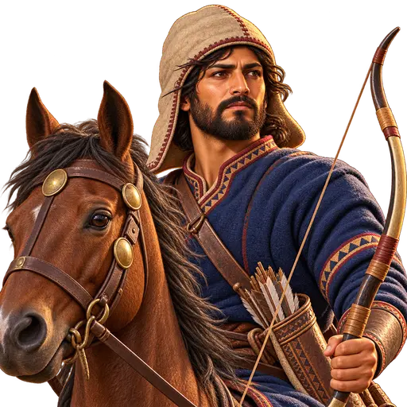
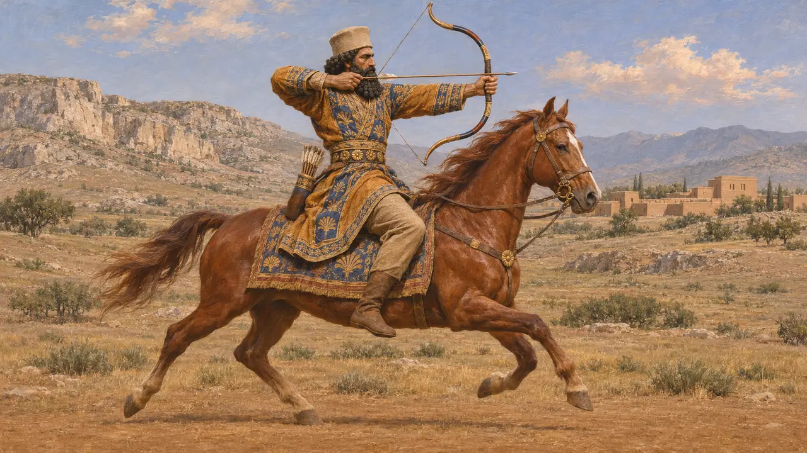
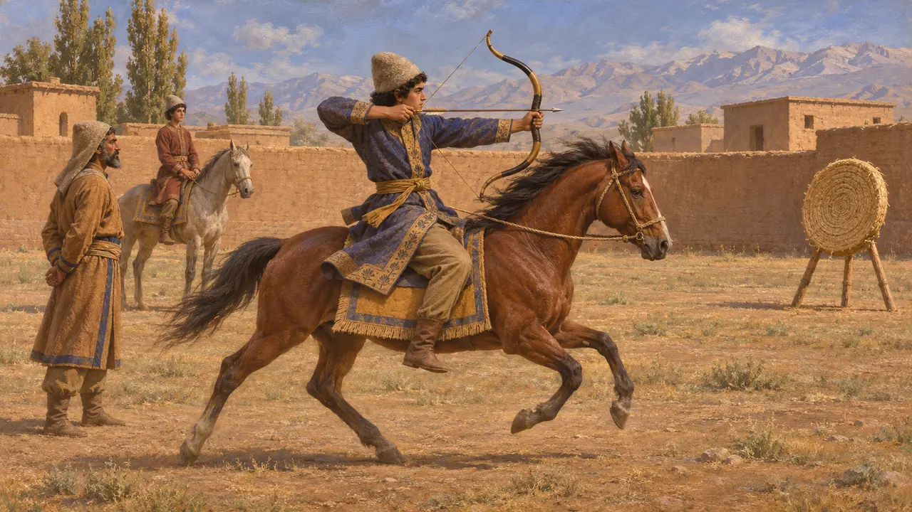
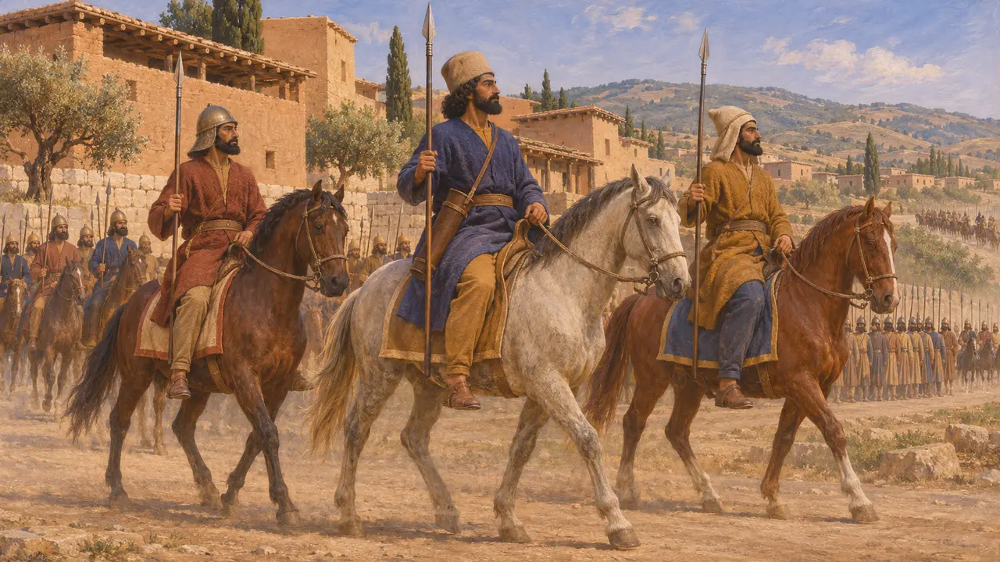
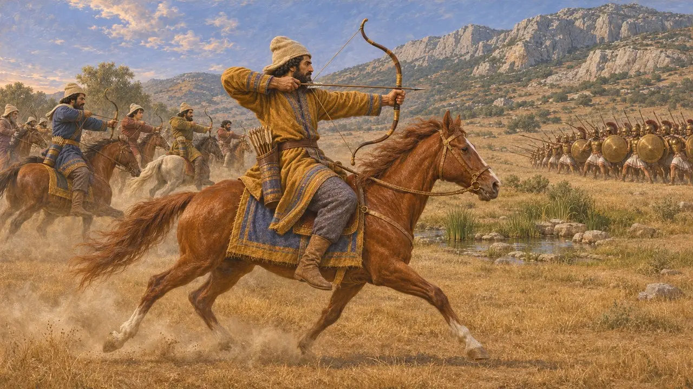
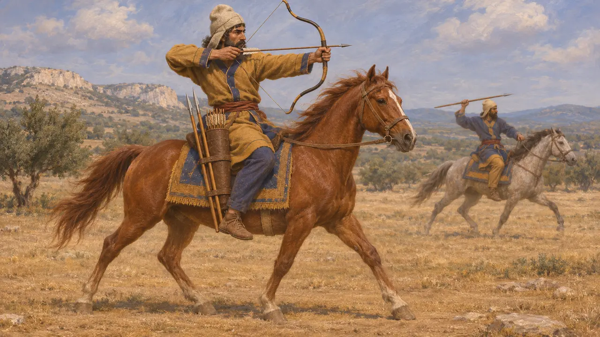

Ansiklopedi › Askerler ve gemiler

Kralın Atlı Okçusu
Ahameniş kraliyet ordusunun atlı okçuları, yaklaşık MÖ 550-479
Kralın Atlı Okçusu, Ahameniş ordusunun atlı yaycılarını temsil eder. Pers soyluları binicilik ve okçulukla övünürdü; Yunan yazarları da Pers süvarisinin, kendisine ulaşamayan piyadelerin üzerine ok ve cirit yağdırdığını anlatır. Günümüze ulaşan hiçbir kaynak ayrı bir kraliyet atlı okçu birliğinden söz etmez.
Oyunda: Oyun eyerden ok atan ve piyadeyi geride bırakan bir kraliyet süvarisi gösterir; bu, Herodotos'un Plataia anlatısıyla uyuşur. Karşı birlik ise basitleştirilmiştir: orada Masistios atlıların değil, Atinalı okçuların ve hoplitlerin elinde düştü.

At sırtından ok atan bir kral
BelgelerdeDareios, Nakş-ı Rüstem'deki mezarının yazıtında bir savaşçı olarak becerilerini sıralar. İyi bir binici, hem yaya hem atlı iyi bir okçu ve aynı zamanda iyi bir mızrakçı olduğunu ileri sürer. Demek ki binicilik ve okçuluk, Kral'ın bizzat nasıl görülmek istediğinin bir parçasıydı.
DNb

Pers eğitiminde binicilik ve okçuluk
Antik anlatıHerodotos'a göre Pers çocuklarına beş ile yirmi yaş arasında yalnızca üç şey öğretilirdi: ata binmek, yay çekmek ve doğruyu söylemek. Bu iddia basitleştirilmiştir, ama Pers seçkinlerinin eğitiminin merkezine atı ve yayı koyması bakımından kraliyet yazıtlarıyla örtüşür.
Herodotus 1.136

Kralın çevresindeki atlılar
Antik anlatıHerodotos, Kserkses'in MÖ 480'de Sardes'ten ayrılışını anlatır. Seçkin bin Pers atlısı önünde, bin atlı daha mızrakçılarının ardında gidiyordu; on bin Pers piyadesinin ardından da on bin Pers süvarisi geliyordu. Pers süvarisinin piyadeye çok benzer biçimde silahlandığını, bazılarının madenî miğferler taktığını söyler. Ordunun tamamı için verdiği sayılar fazlasıyla abartılıdır ve bu kraliyet atlılarının okçu olduğunu da söylemez.
Herodotus 7.40-41; 7.84

Plataia'da eyerden atılan oklar
Antik anlatıHerodotos, Mardonios'un MÖ 479'da süvarilerini Masistios komutasında Yunanlılara karşı nasıl gönderdiğini anlatır. Bölükler hâlinde hücum eden atlılar, Masistios'un atı bir okla vurulup onu yere atana dek Megaralıları zor durumda bırakmış, ardından Atinalı askerler Masistios'u öldürmüştü. Herodotos'a göre daha sonra bu atlılar, onun deyişiyle göğüs göğüse gelinmesi güç atlı okçular, Yunanlıları ciritler ve oklarla taciz etmiş ve Gargafia pınarını tıkamışlardı.
Herodotus 9.20-25; 9.49

Yay, cirit ya da ikisi birden
TartışmalıTarihçiler, Pers süvarisinin ne ölçüde gerçek atlı okçu olduğunu tartışır. Herodotos Plataia'daki atlılara atlı okçu der, ama onları cirit atarken de gösterir; daha sonra yazan Ksenophon da bir süvari için iki cirit önerir. Birçok bilim insanı Pers süvarilerinin karma silahlar taşıdığını, Sakalar gibi bozkır halklarının ise atlı okçulukta uzmanlaştığını düşünür. Kralın ayrı bir atlı okçu muhafızı olup olmadığı bilinmemektedir.
Herodotus 9.49; Xenophon, On Horsemanship 12; C. Tuplin, All the King's Horse, 2010
Kaynaklar
- Herodotus, Histories 1.136; 7.40-41; 7.84; 9.20-25; 9.49
- Darius, tomb inscription at Naqsh-e Rostam (DNb)
- Xenophon, On Horsemanship 12
- C. Tuplin, All the King's Horse: In Search of Achaemenid Persian Cavalry, 2010
- P. Briant, From Cyrus to Alexander, 2002